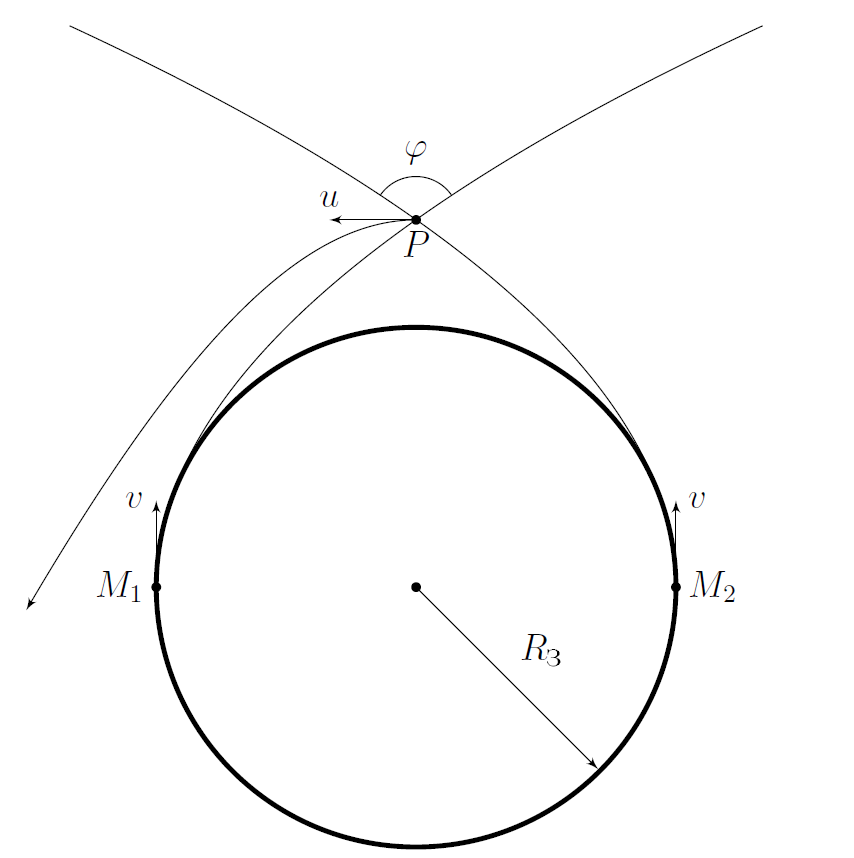
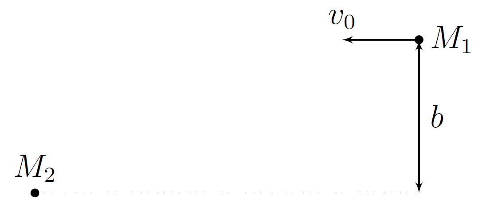

X22 (2022) — English translation
In 1973, a method was proposed for launching satellites into hyperbolic orbit using a gravitational maneuver, which you are invited to analyze. Within the framework of this problem, the motion of two satellites 1 and 2, launched from opposite poles of the Earth with the same magnitude and direction velocities $v$ tangential to it, is studied. Satellite 2 is launched into orbit a short time $\tau$ after the launch of the first. If only one of the satellites is launched into orbit, its trajectory will be a parabola. The mass of satellite 1 is $M_1$, and satellite 2 is $M_2\gg{M_1}$. The resistance of gas in the atmosphere can be neglected, as well as the influence of gravitational attraction from other bodies. The mass of the Earth is $M_{\text{З}}\gg{M_2}$, the radius of the Earth is $R_{\text{З}}$, the gravitational constant is $G$. Let us denote by $P$ the point of intersection of the elliptical orbits of the satellites, and by $\varphi$ the angle between the directions of their velocities at this point. The movement of satellite 1 consists of three sections: 1) Movement in a parabolic orbit; 2) Interaction with satellite 2 near point $P$; 3) Further movement along a hyperbolic orbit in the Earth's gravity field.

In this part of the problem, you will have to approximately describe the trajectory of the satellites to the intersection point $P$ of their orbits.
Hereinafter, assume that $\tau\ll{t_0}$. When satellites approach point $P$, their interaction with the Earth can be neglected.
Next, consider that in the reference frame of satellite 2, the orbit of satellite 1 is a hyperbola with an impact parameter $b$ at their infinite distance. Also consider that at an infinite distance the relative speed of the satellites is equal to $v_0$ found in the previous paragraph.

When the interaction of satellites 1 and 2 can again be neglected, the speed of satellite 1 in the Earth's reference frame is equal to $u$ and is directed perpendicular to the line connecting it to the Earth.
After interaction with satellite 2, the orbit of satellite 1 in the Earth's gravity field is a hyperbola.
Source: https://pho.rs/p/277